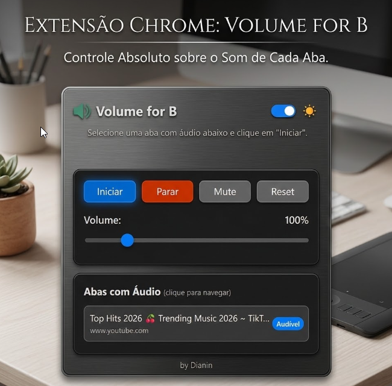
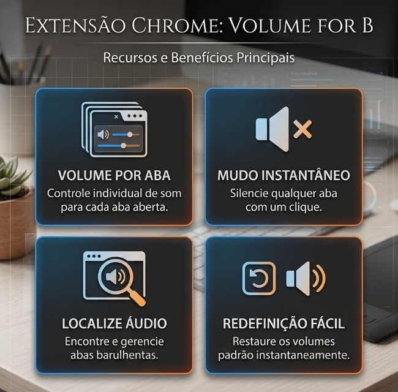

chrome extension for per-tab audio
When the video is too quiet, the tab gets a boost.
Boost tab volume up to 600%. Individual control, local processing, and privacy-focused.

- 600% maximum gain for tabs with audio
- local processing in the browser, no external server
- per tab individual control, mute, reset, and domain memory
what the extension really does
Explain it fast. Do not promise more than it delivers.
Understand the problem, solution, and privacy. Technical details are in the repository.
What it solves
When tab audio is too quiet even though browser and system volume are already high.
How it solves it
It captures tab audio, applies local gain, and lets you set volume between 0% and 600%.
Where the scope ends
It does not control apps outside the browser, does not automatically improve bad mixing, and does not replace hardware.
what you get
Everything is built to adjust audio without friction.
No learning curve. Identify the tab, start control, and adjust gain.
0% to 600% boost
You can reduce, keep at 100%, or significantly increase volume as needed.
List of tabs with audio
The extension shows which tabs are producing sound so you can choose the right one.
Mute, reset, and stop
You can mute the tab, go back to 100%, or stop control without reloading the page.
Domain memory
If a site always needs extra gain, the extension can save that preference.
Simultaneous meetings
Join two calls. Lower the volume of one to hear the other.

how to use
Four steps and done.
The goal is for anyone to understand usage without opening a README or technical documentation.
Open a tab with audio, such as YouTube, Spotify, a call, or an online lesson.
Click the extension icon and select the tab that is playing audio.
Click start and move the slider to set the gain you want.
If you want, use mute, reset, or let the extension remember gain for that domain.
privacy and permissions
What it accesses and why that exists.
Because the extension works with tab audio, this part needs to be clear for anyone who will install and use it.
Local processing
Audio is handled inside the browser. The project states that it does not send audio to external servers, does not use analytics, does not use trackers, and does not sell data.
no ads
no data collection
open source
Permissions in plain language
- tabs: locate open tabs and identify which ones currently have audio.
- tabCapture: access tab audio to apply local gain.
- offscreen: process audio without needing a visible page.
- storage: save theme and preferences, including gain by domain.
faq
Common questions from first-time visitors.
These answers are here so end users do not have to guess how the extension behaves.
Does it collect data?
The project documentation says no. Preferences stay in local storage and audio is processed in the browser.
Does it work on every site?
The goal is to work on browser tabs with audio, but behavior can vary depending on the site and Chromium restrictions.
Does it improve audio quality?
No. It increases gain. If the source is already poor or distorted, more volume does not fix the cause.
If I am a developer, where do I look for technical details?
In the repository. The README already covers installation, scripts, structure, tests, build, and developer-mode loading.